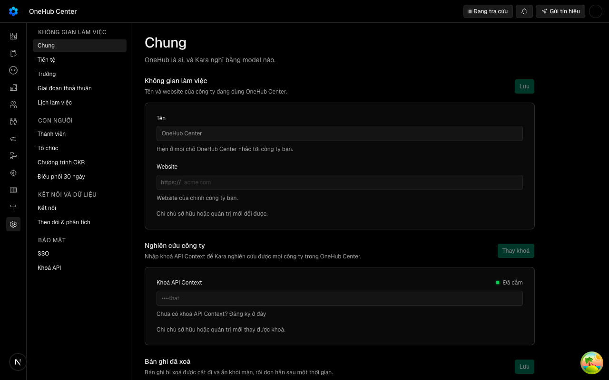

Cài đặt dựng thanh bên 224px bằng NavGroup/NavItem/NavStrip, Hội thoại tự dựng vỏ riêng 213px: hai bản của một mẫu. Khu Mục tiêu sắp là nơi thứ ba dùng mẫu này, luật kho bắt chuyển vào packages/ui trước khi dùng lần hai.
docs/superpowers/specs/2026-10-19-thanh-ben-khu-dung-chung-design.md
| Eval | Tiêu chí | Loại | Verdict | run_id | verified_at |
|---|---|---|---|---|---|
| E1 | AC-1 | test | PASS | minted-thanh-ben-khu-dung-chung-E1-r1 | 2026-10-19T11:59:58Z |
| E2 | AC-2 | test | PASS | minted-thanh-ben-khu-dung-chung-E2-r1 | 2026-10-19T11:59:58Z |
| E3 | AC-3 | test | PASS | minted-thanh-ben-khu-dung-chung-E3-r1 | 2026-10-19T11:59:58Z |
| E4 | AC-4 | test | PASS | minted-thanh-ben-khu-dung-chung-E4-r1 | 2026-10-19T11:59:58Z |
| E5 | AC-5 | test | PASS | minted-thanh-ben-khu-dung-chung-E5-r1 | 2026-10-19T11:59:58Z |
| E6 | AC-6 | test | PASS | minted-thanh-ben-khu-dung-chung-E6-r1 | 2026-10-19T11:59:58Z |
| E7 | AC-7 | test | PASS | minted-thanh-ben-khu-dung-chung-E7-r1 | 2026-10-19T11:59:58Z |
| E8 | AC-8 | script | PASS | minted-thanh-ben-khu-dung-chung-E8-r1 | 2026-10-19T11:59:58Z |
| E9 | AC-8 | ui-check | PASS | minted-thanh-ben-khu-dung-chung-E9-r1 | 2026-10-19T11:59:58Z |
| E10 | AC-9 | script | PASS | minted-thanh-ben-khu-dung-chung-E10-r1 | 2026-10-19T11:59:58Z |
| E11 | AC-10 | judgment | PASS | — | — |
AC-1: Given một `AreaSidebar` có nhãn, đầu thanh, chân thanh, một nhóm không nhãn và hai nhóm có nhãn, một mục đang mở, When dựng, Then trong `aside[data-slot=area-sidebar]` có một `nav` mang đúng nhãn, mỗi nhóm là `[data-slot=nav-group]`, nhóm có nhãn mang `[data-slot=nav-group-label]` đúng chữ còn nhóm không nhãn thì không, mọi mục là `[data-slot=nav-item]`, đúng một mục mang `aria-current="page"`, đầu thanh đứng trước `nav` và chân thanh đứng sau; và ngoài `aside` có một `[data-slot=nav-strip]` mang cùng nhãn chứa đúng các mục ấy cùng thứ tự, không nhãn nhóm, không chân thanh, có đầu thanh, cùng mục đang mở.
cd packages/ui && bun test --preload ./test/setup-dom.ts ./test/area-sidebar.dom.tsx -t tbk-khung Ran 1 test across 1 file. [429.00ms]
AC-2: Given `AreaSidebar placement="panel"`, When dựng, Then chỉ có bố cục dọc (không `[data-slot=nav-strip]`), khung không mang lớp ẩn theo khổ (`hidden`) và không mang tên chuyển cảnh, còn `placement="area"` mang tên chuyển cảnh `area-sidebar` trên cả hai bố cục; và một phần tử bên gọi bọc bằng điều kiện `useAreaSidebarOrientation() === "vertical"` chỉ xuất hiện trong bố cục dọc.
cd packages/ui && bun test --preload ./test/setup-dom.ts ./test/area-sidebar.dom.tsx -t tbk-panel Ran 1 test across 1 file. [371.00ms]
AC-3: Given Cài đặt ở mọi trang con và mọi vai, When thanh bên dựng, Then nhóm, mục, thứ tự, mục sáng và lọc theo vai giữ đúng như bài kiểm đã ký `khung-trang-cai-dat-thanh-ben.dom.tsx`, và thanh bên ấy (cả lúc đang tải) nằm trong `aside[data-slot=area-sidebar]`.
khung-trang-cai-dat-thanh-ben.dom.tsx xanh, roi thanh-ben-khu.dom.tsx -t tbk-cai-dat Ran 1 test across 1 file. [405.00ms]
AC-4: Given Hội thoại có cuộc hôm nay, hôm qua, trong 7 ngày (một chưa đọc, một đang chạy) và hai tác nhân của đội, đang mở một cuộc, When thanh bên dựng ở máy tính, Then nó nằm trong `aside[data-slot=area-sidebar]`; đầu thanh có chữ «Hội thoại» và liên kết «Hội thoại mới» tới `/chat`; ba nhóm ngày mang nhãn bằng `[data-slot=nav-group-label]` đúng chữ tiếng Việt theo thứ tự; mỗi cuộc là `[data-slot=nav-item]` liên kết tới `/chat/<id>` có tiêu đề cắt trên một dòng khi dài, cuộc đang mở mang `aria-current="page"`; mỗi cuộc có một nút xoá; nhóm tác nhân có nhãn là liên kết tới `/agents` kèm số 2 và mỗi tác nhân một `[data-slot=nav-item]`.
thanh-ben-khu.dom.tsx -t tbk-hoi-thoai-may-tinh Ran 1 test across 1 file. [461.00ms]
AC-5: Given Hội thoại, When người bấm một cuộc chưa đọc trong thanh bên, Then `markRead` được gọi đúng một lần với mã cuộc ấy và `onNavigate` được gọi; When không có cuộc nào trong 7 ngày, Then bố cục dọc hiện câu rỗng của Hội thoại và vẫn có nhóm tác nhân.
thanh-ben-khu.dom.tsx -t 'tbk-hoi-thoai-bam|tbk-hoi-thoai-rong' Ran 2 tests across 1 file. [443.00ms]
AC-6: Given Hội thoại ở điện thoại, When thanh bên dựng, Then có một `[data-slot=nav-strip]` mang nhãn danh sách hội thoại chứa mọi cuộc rồi mọi tác nhân theo đúng thứ tự của bố cục dọc, cuộc đang mở mang `aria-current`, không nút xoá, không nhãn nhóm; và đầu thanh «Hội thoại» với liên kết «Hội thoại mới» đứng trên hàng ngang; và ngăn điện thoại của thanh biểu tượng truyền `placement="panel"` (prop bắt buộc của `AgentBuilderSidebar`) và vẫn liệt cuộc theo nhóm có nhãn, mỗi cuộc có nút xoá.
thanh-ben-khu.dom.tsx -t 'tbk-hoi-thoai-dien-thoai|tbk-hoi-thoai-ngan' Ran 2 tests across 1 file. [502.00ms]
AC-7: Given lúc đang tải, When khung chờ của Cài đặt và của Hội thoại dựng, Then cả hai nằm trong `aside[data-slot=area-sidebar]` có `nav` mang `aria-busy="true"` và đúng nhãn của khu, và Hội thoại không còn chuỗi `w-[213px]`.
thanh-ben-khu.dom.tsx -t tbk-dang-tai Ran 1 test across 1 file. [518.00ms]
AC-8: Given cây đã sửa chạy thật trên phiên đo riêng, When bàn đo gieo cho người đo tám cuộc hội thoại qua đường ghi thật (`conversations.createBuilder`) rồi mở `/settings` và một cuộc `/chat/<id>` ở 1280×800 và 375×812, Then ở 1280 thanh bên của hai khu cùng rộng 224px, nhãn nhóm của hai khu cùng `font-size`, `font-weight`, `letter-spacing`, `text-transform`, `color`, không thấy hàng ngang, và bàn đo in số dòng hội thoại thấy được; ở 375 không thấy `aside` thanh khu, không thấy nhãn nhóm, hàng ngang của Hội thoại cuộn được (`scrollWidth > clientWidth`) còn của Cài đặt cuộn được hoặc vừa khung, và trang không tràn ngang (`documentElement.scrollWidth ≤ clientWidth`) ở cả hai khu; kèm bốn ảnh hai khu × hai khổ mà người xem thấy cùng một thanh.
EVAL=${EVAL:-} bun scripts/lan-do/tien-de.mjs --chay "bun _acceptance/thanh-ben-khu-dung-chung/rang/do-man.mjs"
phien-do: xong — mã 0
AC-8: Given cây đã sửa chạy thật trên phiên đo riêng, When bàn đo gieo cho người đo tám cuộc hội thoại qua đường ghi thật (`conversations.createBuilder`) rồi mở `/settings` và một cuộc `/chat/<id>` ở 1280×800 và 375×812, Then ở 1280 thanh bên của hai khu cùng rộng 224px, nhãn nhóm của hai khu cùng `font-size`, `font-weight`, `letter-spacing`, `text-transform`, `color`, không thấy hàng ngang, và bàn đo in số dòng hội thoại thấy được; ở 375 không thấy `aside` thanh khu, không thấy nhãn nhóm, hàng ngang của Hội thoại cuộn được (`scrollWidth > clientWidth`) còn của Cài đặt cuộn được hoặc vừa khung, và trang không tràn ngang (`documentElement.scrollWidth ≤ clientWidth`) ở cả hai khu; kèm bốn ảnh hai khu × hai khổ mà người xem thấy cùng một thanh.

AC-9: Given `apps/app` (trừ thư mục test và proto), When quét, Then không tệp nào còn tự dựng thanh bên khu — không chuỗi `w-[213px]`, không `<aside` nào mang lớp bề rộng cố định (`w-56`, `w-[…px]`) kèm lớp ẩn theo khổ — và `settings-sidebar.tsx` cùng `agent-builder-sidebar.tsx` nhập `AreaSidebar` từ `@crm/ui/components/area-sidebar`.
bun _acceptance/thanh-ben-khu-dung-chung/rang/quet-vo-tay.mjs DUNG AC-9: 492 tep, 0 vo thanh ben tu dung, 2/2 tep nhap AreaSidebar
AC-10: Given `docs/design.md` và `docs/settings.md` sau vòng này, When người đọc cần chọn giữa thanh bên khu và thẻ con cho một màn mới, Then `docs/design.md` có một mục nói khi nào dùng thanh bên khu (các nơi đến ngang hàng của một khu, đặt ở layout của khu, nhóm có nhãn, điện thoại thành hàng ngang), khi nào dùng thẻ con (các phần của một vật trên một trang), giới hạn một thanh khu và một hàng thẻ con trên một màn, ví dụ thật của kho cho mỗi bên, và một dòng «Dấu hiệu vẽ tay» trỏ `AreaSidebar`; `docs/settings.md` mục «Thanh bên» trỏ cùng thành phần.
Phán đoán: Ba lens cùng thấy mục «Thanh bên khu và thẻ con» trong docs/design.md (dòng 111–132) đủ năm ý, gồm khi nào dùng thanh bên khu, khi nào dùng thẻ con, giới hạn một thanh khu và một hàng thẻ con không lồng, ví dụ thật cho mỗi bên, và câu chọn «đổi nơi hay đổi phần». Bảng «Dấu hiệu vẽ tay» có dòng `<aside>` tự đặt dẫn tới `AreaSidebar` (dòng 69), và docs/settings.md mục «Thanh bên» (dòng 32) trỏ về `AreaSidebar`.
| Khối | Tác tử | Token đầu ra |
|---|---|---|
| S4 round 1 | 27 | 36.552 |
1 lượt chấm · tổng 36.552 token
chưa gộp vào onehub (nhánh production kho khai)